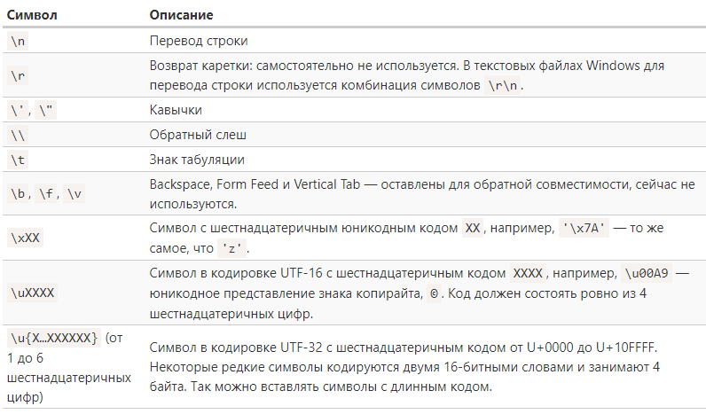
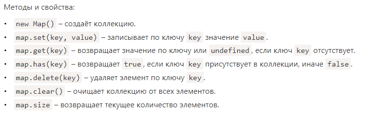
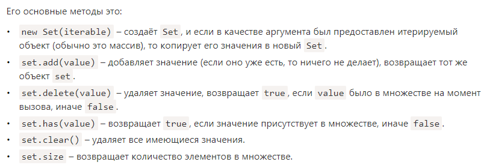
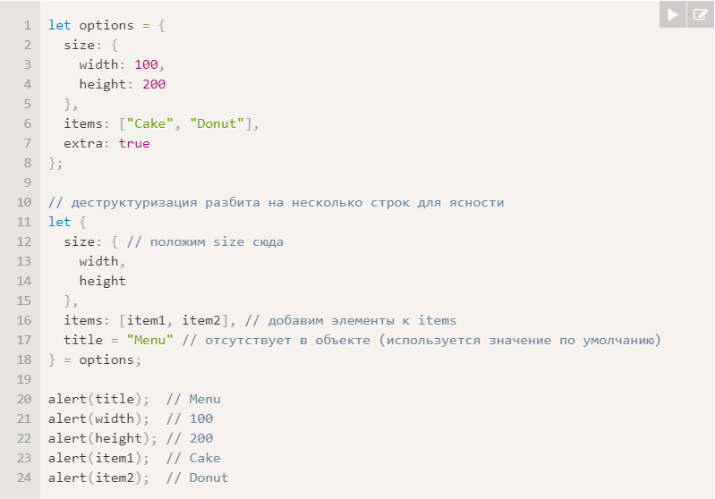
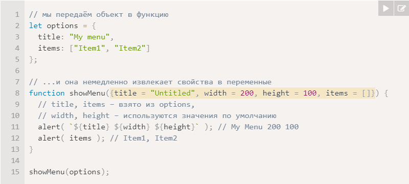
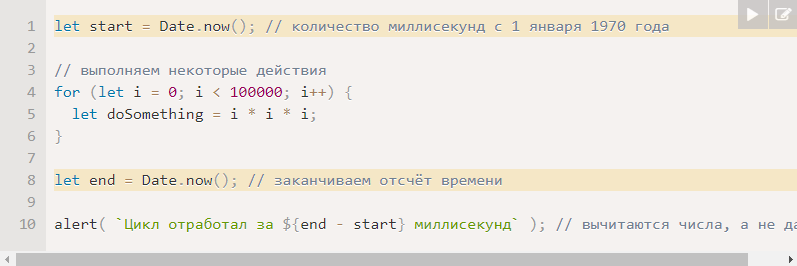

Обозначения:
Зеленый блок = прогресс изучения; Зеленая рамка = повторил, классно.
Синий блок = полезная подсказка; Синяя рамка = очень важно, очень классно.
Красный блок = задача; Красная рамка = на мой взгляд не стоит внимания.
5.1 Методы у примитивов
Основы
JavaScript позволяет нам работать с примитивными типами данных (строками, числами и т.д.), будто они являются объектами. У них есть и методы.
Есть 7 примитивных типов: string, number, boolean, symbol, null, undefined и bigint. И ещё есть объект, он не примитив.
Примитив как объект
Примитивы остаются примитивами. Одно значение, как и хотелось.
Язык позволяет осуществлять доступ к методам и свойствам строк, чисел, булевых значений и символов.
Чтобы это работало, при таком доступе создаётся специальный «объект-обёртка», который предоставляет нужную функциональность, а после удаляется.
Каждый примитив имеет свой собственный «объект-обёртку», которые называются: String, Number, Boolean и Symbol.
null/undefined не имеют методов.
Задачи. Можно ли добавить свойство строке?
Нет, нельзя. Примитивы это не объекты, мы можем лишь вызывать методы их "оберток".
5.2 Числа (number)
Способы записи числа
1) let billion = 1e9; // 1 и 9 нулей
2) let ms = 1e-6; // шесть нулей, слева от 1
3) alert( 0xFF ); // 255 (шестнадцатиричные)
4) let b = 0o377; // восьмеричная форма записи числа 255
4) let a = 0b11111111; // бинарная форма записи числа 255
toString(base)
num.toString(base) возвращает строковое представление числа num в системе счисления base.
Например: let num = 255; alert( num.toString(16) ); // ff
Две точки для вызова метода: если нам надо вызвать метод на числе, то нужно поставить две точки (123456..toString(36))
Округление
В JavaScript есть несколько встроенных функций для работы с округлением:
1) Math.floor: Округление в меньшую сторону: 3.1 становится 3, а -1.1 — -2.
2) Math.ceil: Округление в большую сторону: 3.1 становится 4, а -1.1 — -1.
3) Math.round: Округление до ближайшего целого: 3.1 становится 3, 3.6 — 4, а -1.1 — -1.
4) Math.trunc: Удаление дробной части без округления: 3.1 становится 3, а -1.1 — -1.
Метод toFixed(n) округляет число до n знаков после запятой и возвращает строку.
Неточные вычисления
Если число слишком большое, оно переполнит 64-битное хранилище, JavaScript вернёт Infinity
Наиболее часто встречающаяся ошибка при работе с числами в JavaScript – это потеря точности:
Это работает так: alert( 0.1 + 0.2 ); // 0.30000000000000004
Почему так? Дроби являются бесконечной дробью в двоичной форме.
Что такое 0.1? Это единица делённая на десять — 1/10, одна десятая.
В десятичной системе счисления такие числа легко представимы, по сравнению с одной третьей: 1/3,
которая становится бесконечной дробью 0.33333(3).
В JavaScript нет возможности для хранения точных значений 0.1 или 0.2, используя двоичную систему,
точно также, как нет возможности хранить одну третью в десятичной системе счисления.
Как решить проблему? Использовать +number.toFixed(n)
Проверка: isFinite и isNaN
isNaN(value) преобразует значение в число и проверяет является ли оно NaN
isFinite(value) преобразует аргумент в число и возвращает true, если оно является обычным числом, т.е. не NaN/Infinity/-Infinity
Помните, что пустая строка интерпретируется как 0 во всех числовых функциях, включаяisFinite.
parseInt и parseFloat
Для явного преобразования к числу можно использовать + или Number().
Если строка не является в точности числом, то результат будет NaN.
Единственное исключение — это пробелы в начале строки и в конце, они игнорируются.
Для этого есть parseInt и parseFloat. Они «читают» число из строки. parseInt('100px') // 100
Другие математические функции
1) Math.random(): Возвращает псевдослучайное число в диапазоне от 0 (включительно) до 1 (но не включая 1).
2) Math.max(a, b, c...) / Math.min(a, b, c...): Возвращает наибольшее/наименьшее число из перечисленных аргументов.
3) Math.pow(n, power): Возвращает число n, возведённое в степень power.
Задачи. Сумма пользовательских чисел
let a = +prompt("A:", 0);
let b = +prompt("B:", 0);
alert(a + b);
Задачи. Почему 6.35.toFixed(1) == 6.3?
alert(Math.round(6.35 * 10) / 10); // 6.35 имеет потерю точности (прочитал позже), round округляет в большую сторону
Задачи. Ввод числового значения
function readNumber() {
let num;
for (;!isFinite(num);) {
num = prompt("Число:", "");
if (num === null || num === "") {
return null;
}
}
return +num;
}
Задачи. Бесконечный цикл по ошибке
0.2 имеет потерю точности, и никогда не достигнет 10
Задачи. Случайное число от min до max
function random(min, max) {
return min + Math.random() * (max - min);
}
Задачи. Случайное целое число от min до max
function randomInteger(min, max) {
return Math.floor(min + Math.random() * (max + 1 - min));
}
5.3 Строки (string)
Кавычки
Строку можно создать с помощью одинарных, двойных либо обратных кавычек.
Спецсимволы
Список спецсимволов:

Длина строки
Свойство length содержит длину строки: alert( `My\n`.length ); // 3
Доступ к символам
Получить символ, который занимает позицию pos, можно с помощью квадратных скобок: [pos].
Также можно использовать метод charAt: str.charAt(pos).
Разница только в том, что если символ с несуществующей позицией отсутствует, тогда [] вернёт undefined, а charAt — пустую строку.
Пример: let str = `Hello`; alert( str[str.length - 1] ); // o
Строки неизменяемы
Содержимое строки в JavaScript нельзя изменить. Нельзя взять символ посередине и заменить его.
Как только строка создана — она такая навсегда.
Пример: let str = 'Hi'; str[0] = 'h'; // ошибка
Изменение регистра
Методы toLowerCase() и toUpperCase() меняют регистр символов.
Поиск подстроки (str.indexOf)
Первый метод — str.indexOf(substr, pos). Он ищет подстроку substr в строке str,
начиная с позиции pos, и возвращает позицию, на которой располагается совпадение, либо -1 при отсутствии совпадений.
Пример: let str = 'Widget with id'; alert( str.indexOf('id', 2) ) // 12
Поиск подстроки (includes, startsWith, endsWith)
Более современный метод str.includes(substr, pos) возвращает true, если в строке str есть подстрока substr, либо false, если нет.
Это — правильный выбор, если нам необходимо проверить, есть ли совпадение, но позиция не нужна.
alert( "Widget with id".includes("Widget") ); // true
alert( "Widget".startsWith("Wid") ); // true, "Wid" — начало "Widget"
alert( "Widget".endsWith("get") ); // true, "get" — окончание "Widget"
Получение подстроки
В JavaScript есть 3 метода для получения подстроки: substring, substr и slice.
1) str.slice(start [, end]): возвращает от start до end (не включая end).
Числа с минусом означают позицию справа, а не слева.
Пример: let str = "stringify"; alert( str.slice(0, 5) ); // 'strin', символы от 0 до 5 (не включая 5).
2) str.substring(start [, end]): возвращает часть строки между start и end.
Отрицательные значения равнозначны 0.
let str = "stringify"; alert( str.substring(2, 6) ); // "ring"; alert( str.substring(6, 2) ); // "ring"
3) str.substr(start [, length]): возвращает часть строки от start длины length.
Значение start может быть отрицательным.
Пример: let str = "stringify"; alert( str.substr(2, 4) ); // ring, получаем 4 символа, начиная с позиции 2
Из этих методов slice наиболее гибок и лучше выбирать его.
Дополнительно про строки
Строки также имеют ещё кое-какие полезные методы:
1) str.trim() — убирает пробелы в начале и конце строки.
2) str.repeat(n) — повторяет строку n раз.
5.4 Массивы
Объявление
Два варианта синтаксиса для создания пустого массива: let arr = new Array(); let arr = [];
Почти всегда используется второй.
Элементы массива нумеруются, начиная с нуля.
Получить элемент: let fruits = ["Яблоко", "Апельсин", "Слива"]; fruits[0]; alert( fruits[0] ); // Яблоко
Заменить элемент: fruits[2] = 'Груша'; // теперь ["Яблоко", "Апельсин", "Груша"]
Добавить новый к существующему массиву: fruits[3] = 'Лимон'; // теперь ["Яблоко", "Апельсин", "Груша", "Лимон"]
Общее число элементов массива содержится в его свойстве length: fruits.length
В массиве могут храниться элементы любого типа: [ 'Яблоко', { name: 'Джон' }, true, function() { alert('привет'); } ]
Методы pop/push, shift/unshift
Есть два подхода к пониманию данных в массиве: очередь и стек.
Очередь: push добавляет элемент в конец. shift удаляет элемент в начале, сдвигая очередь, так что второй элемент становится первым.
Когда использовать очередь? Например, очередь сообщений, которые надо показать на экране.
Стек: push добавляет элемент в конец. pop удаляет последний элемент.
Когда использовать стек? Колода карт: новые карты кладутся наверх и берутся тоже сверху.
Методы push и unshift могут добавлять сразу несколько элементов (указанных в скобках).
Методы, работающие с концом массива
1) pop: Удаляет последний элемент из массива и возвращает его.
Пример: let fruits = ["Яблоко", "Апельсин", "Груша"];
alert( fruits.pop() ); // удаляем "Груша" и выводим его
alert( fruits ); // Яблоко, Апельсин
2) push: Добавляет элемент в конец массива.
Пример: let fruits = ["Яблоко", "Апельсин"];
fruits.push("Груша");
alert( fruits ); // Яблоко, Апельсин, Груша
Методы, работающие с началом массива
1) shift: Удаляет из массива первый элемент и возвращает его.
Пример: let fruits = ["Яблоко", "Апельсин", "Груша"];
alert( fruits.shift() ); // удаляем Яблоко и выводим его
alert( fruits ); // Апельсин, Груша
2) unshift: Добавляет элемент в начало массива.
Пример: let fruits = ["Апельсин", "Груша"];
fruits.unshift('Яблоко');
alert( fruits ); // Яблоко, Апельсин, Груша
Внутреннее устройство массива
Квадратные скобки, используемые для того, чтобы получить доступ к свойству arr[0] – это по сути обычный синтаксис доступа по ключу,
как obj[key], где в роли obj у нас arr, а в качестве ключа – числовой индекс.
Массив является объектом и, следовательно, ведёт себя как объект. (typeof [] // "object")
Массив копируется по ссылке: let fruits = ["Банан"]; let arr = fruits; // копируется по ссылке
Массив следует считать особой структурой, позволяющей работать с упорядоченными данными. Для других целей стоит использовать объект.
Эффективность
Методы push/pop выполняются быстро, а методы shift/unshift – медленно.
Перебор элементов
Одним из самых старых способов перебора элементов массива является цикл for по цифровым индексам:
for (let i = 0; i < arr.length; i++) {...}
Возможен и другой вариант цикла, for..of: for (let fruit of fruits) {...}
Немного о «length»
Свойство length автоматически обновляется при изменении массива.
Если быть точными, это не количество элементов массива, а наибольший цифровой индекс плюс один.
length можно перезаписать. Таким образом, самый простой способ очистить массив – это arr.length = 0;.
Многомерные массивы
Массивы могут содержать элементы, которые тоже являются массивами.
Это можно использовать для создания многомерных массивов, например, для хранения матриц:
let matrix = [[1, 2, 3],[4, 5, 6],[7, 8, 9]]; alert( matrix[1][1] ); // 5, центральный элемент
toString
Массивы по-своему реализуют метод toString, который возвращает список элементов, разделённых запятыми.
Массивы реализуют только преобразование toString, таким образом, здесь [] становится пустой строкой, а [1,2] становится "1,2".
Задачи. Скопирован ли массив?
4 (0..3 + 1). Т.к. массивы это те же объекты и тут shoppingCart и fruits это ссылки на один массив.
Задачи. Операции с массивами
let styles = ["Джаз", "Блюз"];
styles.push("Рок-н-ролл");
styles[Math.floor((styles.length - 1) / 2)] = "Классика";
alert(styles.shift());
styles.unshift("Рэп", "Регги");
Задачи. Вызов в контексте массива
Расшифрую немного:
let arr = ["a", "b"];
arr.push(function() {alert(this);}); // ["a", "b", function]
arr[2](); // function()
Вернёт контекст arr: ["a", "b", function]
Задачи. Сумма введённых чисел
function sumInput() {
let nums = [];
while (true) {
let num = +prompt("Input number:", 0);
nums.push(num);
if (num === "" || num === null || !isFinite(num)) {
break;
}
}
let sum = 0;
for (let number of numbers) {
sum += number;
}
return sum;
}
Задачи. Подмассив наибольшей суммы
no way
5.5 Методы массивов
Добавление/удаление элементов
1) arr.splice(pos, deleteCount, ...items) – начиная с индекса pos, удаляет deleteCount элементов и вставляет items.
2) arr.slice(start, end) – создаёт новый массив, копируя в него элементы с позиции start до end (не включая end).
3) arr.concat(arg1, arg2...) – возвращает новый массив: копирует все члены текущего массива и добавляет к нему items.
Если какой-то из items является массивом, тогда берутся его элементы.
Перебор: forEach
arr.forEach(func) – вызывает func для каждого элемента. Ничего не возвращает.
Например: ["Bilbo", "Gandalf", "Nazgul"].forEach(alert); // Вызов alert для каждого элемента
Поиск в массиве
1) arr.includes(item, from) – ищет item, начиная с индекса from, и возвращает true, если поиск успешен.
2) arr.find(func)/arr.filter(func) – фильтрует элементы через функцию и отдаёт первое/все значения,
при прохождении которых через функцию возвращается true.
3) arr.findIndex похож на find, но возвращает индекс вместо значения.
Преобразование массива
1) arr.map(func) – создаёт новый массив из результатов вызова func для каждого элемента.
2) arr.sort(func) – сортирует массив «на месте», а потом возвращает его.
3) arr.reverse() – «на месте» меняет порядок следования элементов на противоположный и возвращает изменённый массив.
4) arr.split/join – преобразует строку в массив и обратно.
5) reduce(func, initial) – вычисляет одно значение на основе всего массива, вызывая func для каждого элемента и передавая промежуточный результат между вызовами.
Дополнительно
Array.isArray(arr) проверяет, является ли arr массивом.
Обратите внимание, что методы sort, reverse и splice изменяют исходный массив.
arr.some(fn)/arr.every(fn): Функция fn вызывается для каждого элемента массива аналогично map.
Если какие-либо/все результаты вызовов являются true, то метод возвращает true, иначе false.
Задачи. Переведите текст вида border-left-width в borderLeftWidth
function camelize(str) {
return str.split("-").map((word, index) => index === 0 ? word : word[0].toUpperCase() + word.slice(1)).join("");
}
Задачи. Фильтрация по диапазону
function filterRange(arr, a, b) {
return arr.filter(item => (item >= a && item <= b));
}
Задачи. Фильтрация по диапазону "на месте"
function filterRangeInPlace(arr, a, b) {
for (let i = 0; i < arr.length; i++) {
let value = arr[i];
if (value < a || value > b) {
arr.splice(i, 1);
i--;
}
}
}
Задачи. Сортировать в порядке по убыванию
arr.sort().reverse();
Задачи. Скопировать и отсортировать массив
function copySorted(arr) {
return arr.slice().sort();
}
let sorted = copySorted([1, 3, 2]);
Задачи. Создать расширяемый калькулятор
function Calculator(arr) {
this.operation = {
"+": (a, b) => a + b,
"-": (a, b) => a - b,
}
this.calculate = function(str) {
let split = str.split(" ");
let a = +split[0];
let op = split[1];
let b = +split[2];
if (!this.operation[op] || isNaN(a) || isNaN(b)) {
return NaN;
}
return this.operation[op](a, b);
}
this.addMethod(name, func) {
this.operation[name] = func;
}
}
Задачи. Трансформировать в массив имён
let names = users.map(user => user.name);
Задачи. Трансформировать в объекты
let usersMapped = users.map(user => ({
fullName: `{user.name} {user.surname}`,
id: user.id,
})); // использовали круглые скобки чтобы вернуть объект
Задачи. Отсортировать пользователей по возрасту
function sortByAge(users) {
arr.sort((a, b) => a.age > b.age ? 1 : -1);
// тут не совсем разобрался почему 1 и -1
}
Задачи. Перемешайте массив
function shuffle(array) {
array.sort(() => Math.random() - 0.5);
}
Задачи. Получить средний возраст
function getAverageAge(users) {
users.reduce((prev, user) => prev + user.age, 0) / users.length;
}
Задачи. Оставить уникальные элементы массива
_.uniq(arr);
а вообще
function unique(arr) {
let res = [];
for (let str of arr) {
if (!result.includes(str)) {
result.push(str);
}
}
return result;
}
5.6 Перебираемые объекты
Symbol.iterator
Перебираемые (или итерируемые) объекты – это концепция, которая позволяет использовать любой объект в цикле for..of.
Технически итерируемые объекты должны иметь метод Symbol.iterator.
Результат вызова obj[Symbol.iterator] называется итератором. Он управляет процессом итерации.
Итератор должен иметь метод next(), который возвращает объект {done: Boolean, value: any},
где done:true сигнализирует об окончании процесса итерации, в противном случае value – следующее значение.
Строка – перебираемый объект
Среди встроенных перебираемых объектов наиболее широко используются массивы и строки.
Для строки for..of перебирает символы.
Array.from
Array.from принимает итерируемый объект или псевдомассив и делает из него «настоящий» Array.
После этого мы уже можем использовать методы массивов.
Пример: let arrayLike = {0: "Hello", 1: "World", length: 2}; let arr = Array.from(arrayLike); alert(arr.pop()); // World (метод работает)
5.7 Map и Set
Map
Map – это коллекция ключ/значение, как и Object. Но основное отличие в том, что Map позволяет использовать ключи любого типа.
Map может использовать объекты в качестве ключей.

Перебор Map
Для перебора коллекции Map есть 3 метода:
1) map.keys() – возвращает итерируемый объект по ключам.
2) map.values() – возвращает итерируемый объект по значениям.
3) map.entries() – возвращает итерируемый объект по парам вида [ключ, значение], этот вариант используется по умолчанию в for..of.
Object.entries: Map из Object
При создании Map мы можем указать массив (или другой итерируемый объект) с парами ключ-значение для инициализации:
Пример: let map = new Map([['1', 'str1'],[1, 'num1'],[true, 'bool1']]);
Если у нас уже есть обычный объект, и мы хотели бы создать Map из него, то поможет встроенный метод Object.entries(obj),
который получает объект и возвращает массив пар ключ-значение для него.
Синтаксис: let obj = {name: "John", age: 30}; let map = new Map(Object.entries(obj));
Object.fromEntries: Object из Map
Есть метод Object.fromEntries, который делает противоположное: получив массив пар вида [ключ, значение], он создаёт из них объект.
Пример: let prices = Object.fromEntries([['banana', 1],['orange', 2],['meat', 4]]);
Если у нас уже есть обычный объект, и мы хотели бы создать Map из него, то поможет встроенный метод Object.entries(obj),
который получает объект и возвращает массив пар ключ-значение для него.
Синтаксис: let obj = {name: "John", age: 30}; let map = new Map(Object.entries(obj));
Set
Set – это особый вид коллекции: «множество» значений (без ключей), где каждое значение может появляться только один раз.

Перебор объекта Set
Мы можем перебрать содержимое объекта set как с помощью метода for..of, так и используя forEach.
Задачи. Фильтрация уникальных элементов массива
function unique(arr) {
return Array.from(new Set(arr));
} // Set задал уникальность, а Array.from сделал из этого массив
Задачи. Отфильтруйте анаграммы
function aclean(arr) {
let obj = {};
for (let i = 0; i < arr.length; i++) {
let sorted = arr[i].toLowerCase().split("").sort().join("");
obj[sorted] = arr[i];
}
return Object.values(obj);
}
Задачи. Перебираемые ключи
let keys = Array.from(map.keys());
5.8 WeakMap и WeakSet
WeakMap
WeakMap – это Map-подобная коллекция, позволяющая использовать в качестве ключей только объекты,
и автоматически удаляющая их вместе с соответствующими значениями, как только они становятся недостижимыми иными путями.
WeakSet
WeakSet – это Set-подобная коллекция, которая хранит только объекты и удаляет их, как только они становятся недостижимыми иными путями.
WeakMap и WeakSet используются как вспомогательные структуры данных в дополнение к «основному» месту хранения объекта.
Если объект удаляется из основного хранилища и нигде не используется, кроме как в качестве ключа в WeakMap или в WeakSet,
то он будет удалён автоматически.
Задачи. Хранение отметок "не прочитано"
WeakSet
Задачи. Хранение времени прочтения
WeakMap:
let readTime = new WeakMap();
readTime.set(messages[0], time);
5.9 Object.keys, values, entries
Object.keys, values, entries
Методы map.keys(), map.values(), map.entries() поддерживаются для структур: Map, Set, Array.
Для простых объектов доступны следующие методы:
1) Object.keys(obj) – возвращает массив ключей.
2) Object.values(obj) – возвращает массив значений.
3) Object.entries(obj) – возвращает массив пар [ключ, значение].
Трансформации объекта
У объектов нет множества методов, которые есть в массивах, например map, filter и других.
Если мы хотели бы их применить, то можно использовать Object.entries с последующим вызовом Object.fromEntries:
1) Вызов Object.entries(obj) возвращает массив пар ключ/значение для obj.
2) На нём вызываем методы массива, например, map.
3) Используем Object.fromEntries(array) на результате, чтобы преобразовать его обратно в объект.
Задачи. Сумма свойств объекта
function sumSalaries(salaries) {
let sum = 0;
for (let salary of Object.values(salaries)) {
sum += salary;
}
return sum;
}
Задачи. Подсчёт количества свойств объекта
function count(obj) {
return Object.keys(obj).length;
}
5.10 Деструктурирующее присваивание
Деструктуризация массива
Пример: let arr = ["Ilya", "Kantor"]; let [firstName, surname] = arr; // записывает firstName=arr[0], surname=arr[1]
Пропускайте элементы, используя запятые: let [firstName, , title] = arr;
Работает с любым перебираемым объектом с правой стороны, не только с массивами.
Остаточные параметры «…»
Означает "добавить к тому что есть всё остальное": let [name1, name2, ...rest] = arr;
Переменная rest является массивом из оставшихся элементов.
Вместо rest можно использовать любое другое название переменной, просто убедитесь,
что перед переменной есть три точки и она стоит на последнем месте в деструктурирующем присваивании.
Значения по умолчанию
Если нам необходимо указать значения по умолчанию, то мы можем использовать =:
let [name = "Guest", surname = "Anonymous"] = ["Julius"]; // name равно Julius (из массива)
Деструктуризация объекта
Синтаксис: let {var1, var2} = {var1:…, var2:…}
Например: let options = {title: "Menu",width: 100,height: 200}; let {title, width, height} = options;
Если мы хотим присвоить свойство объекта переменной с другим названием, например, свойство options.width присвоить переменной w,
то мы можем использовать двоеточие:
let {width: w, height: h, title} = options; // { sourceProperty: targetVariable }
Для потенциально отсутствующих свойств мы можем установить значения по умолчанию: let {width = 100, height = 200, title} = options;
Остаток объекта «…»
Пример: let options = {title: "Menu",width: 100,height: 200}; let {title, ...rest} = options;
// rest = объект с остальными свойствами; // сейчас title="Menu", rest={height: 200, width: 100}
Вложенная деструктуризация
Если объект или массив содержит другие вложенные объекты или массивы, то мы можем использовать
более сложные шаблоны с левой стороны, чтобы извлечь более глубокие свойства.

Умные параметры функций
Есть ситуации, когда функция имеет много параметров, большинство из которых не обязательны.
Мы можем передать параметры как объект, и функция немедленно деструктурирует его в переменные:

5.11 Дата и время
Создание
new Date(); // Без аргументов – создать объект Date с текущими датой и временем
new Date(milliseconds); // объект Date с временем, равным количеству миллисекунд, с 1 января 1970 года UTC+0.
new Date(datestring); // let date = new Date("2017-01-26");
new Date(year, month, date, hours, minutes, seconds, ms)
Получение компонентов даты
1) getFullYear() // Получить год (4 цифры)
2) getMonth() // Получить месяц, от 0 до 11.
3) getDate() // Получить день месяца, от 1 до 31, что несколько противоречит названию метода.
4) getHours(), getMinutes(), getSeconds(), getMilliseconds()
5) getDay() // день недели от 0 (воскресенье) до 6 (суббота)
Все вышеперечисленные методы возвращают значения в соответствии с местным часовым поясом.
Установка компонентов даты
Следующие методы позволяют установить компоненты даты и времени:
setFullYear(year, [month], [date])
setMonth(month, [date])
setDate(date)
setHours(hour, [min], [sec], [ms])
setMinutes(min, [sec], [ms])
setSeconds(sec, [ms])
setMilliseconds(ms)
setTime(milliseconds)
Автоисправление даты
Автоисправление – это очень полезная особенность объектов Date.
Можно устанавливать компоненты даты вне обычного диапазона значений, а объект сам себя исправит.
Преобразование к числу, разность дат
Если объект Date преобразовать в число, то получим таймстамп по аналогии с date.getTime():
alert(+date); // количество миллисекунд, то же самое, что date.getTime()
Важный побочный эффект: даты можно вычитать, в результате получаем разность в миллисекундах.
Date.now()
Если нужно просто измерить время, объект Date нам не нужен.
Данный метод используется из соображений удобства или когда важно быстродействие,
например, при разработке игр на JavaScript или других специализированных приложений.

Разбор строки с датой
Метод Date.parse(str) считывает дату из строки.
Формат строки должен быть следующим: YYYY-MM-DDTHH:mm:ss.sssZ // 'Z' обозначает часовой пояс в формате +-hh:mm.
Если указать просто букву Z, то получим UTC+0.
Возможны и более короткие варианты, например, YYYY-MM-DD или YYYY-MM, или даже YYYY.
Задачи. Создайте дату
alert(new Date(2012, 2, 20, 3, 12));
Задачи. Покажите день недели
function getWeekDay(date) {
let days = ['ВС', 'ПН', 'ВТ', 'СР', 'ЧТ', 'ПТ', 'СБ'];
return days[date.getDate()];
}
Задачи. День недели в европейской нумерации
function getLocalDay(date) {
let day = date.getDate();
if (day == 0) {
day = 7;
}
return day;
}
Задачи. Какой день месяца был много дней назад?
function getDateAgo(date, days) {
let dateCopy = new Date(date);
dateCopy.setDate(date.getDate() - days);
return dateCopy.getDate();
}
Задачи. Последнее число месяца?
function getLastDayOfMonth(year, month) {
let date = new Date(year, month + 1, 0);
return date.getDate();
}
Задачи. Сколько сегодня прошло секунд?
function getSecondsToday() {
let now = new Date();
let today = new Date(now.getFullYear(), now.getMonth(), now.getDate());
let result = now - today; // ms
return Math.round(result / 1000); // sec
}
Задачи. Сколько секунд осталось до завтра?
function getSecondsToday() {
let now = new Date();
let tomorrow = new Date(now.getFullYear(), now.getMonth(), now.getDate() + 1);
let result = tomorrow - now; // ms
return Math.round(result / 1000); // sec
}
Задачи. Форматирование относительной даты
no way
5.12 Формат JSON, метод toJSON
JSON.stringify
JSON – это формат данных, который имеет собственный независимый стандарт и библиотеки для большинства языков программирования.
JSON поддерживает простые объекты, массивы, строки, числа, логические значения и null.
JSON.stringify для преобразования объектов в JSON. Метод JSON.stringify(obj) берёт объект и преобразует его в строку.
Полный синтаксис JSON.stringify: let json = JSON.stringify(value[, replacer, space]):
value: Значение для кодирования.
replacer: Массив свойств для кодирования или функция соответствия function(key, value).
space: Дополнительное пространство (отступы), используемое для форматирования.
JSON.parse
Чтобы декодировать JSON-строку, нам нужен другой метод с именем JSON.parse. let value = JSON.parse(str, [reviver]);
str: JSON для преобразования в объект.
reviver: Необязательная функция, которая будет вызываться для каждой пары (ключ, значение) и может преобразовывать значение.
Задачи. Преобразуйте объект в JSON, а затем обратно в обычный объект
let newUser = JSON.parse(JSON.stringify(user));
Задачи. Исключить обратные ссылки
no way